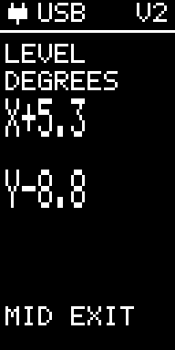
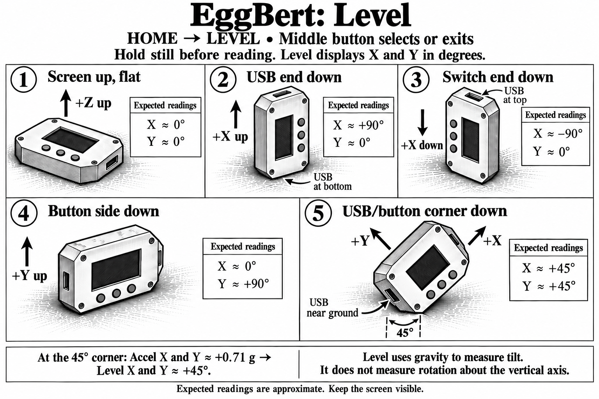

Level
Current controls
Place EggBert on the surface and read the X and Y tilt in degrees. Near zero on both axes indicates level. Tilt readings use the calibrated low-g accelerometer on both versions.
Middle: return HOME. For six-face calibration, use CALIBRATE on HOME 2.

The experiment illustration below shows an earlier screen arrangement. Follow the current controls above.
